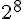
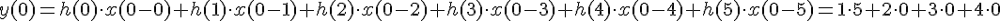
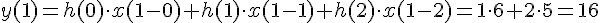

Особенности технической реализации цифровых фильтров при использовании целочисленной арифметики
при перемножении двух 1-байтных чисел получается 2-х байтное число
при сложении двух 2-байтных чисел в данном случае получается 2-х байтное число
для деления на  можно просто отбросить старший байт
При аппаратной реализации цифровых фильтров на базе ПЛИС практически всегда реализуется целочисленная арифметика. При использовании цифровых процессоров обработки сигналов это необязательно.
Свёртка:


считать надо пока не пойдут нули